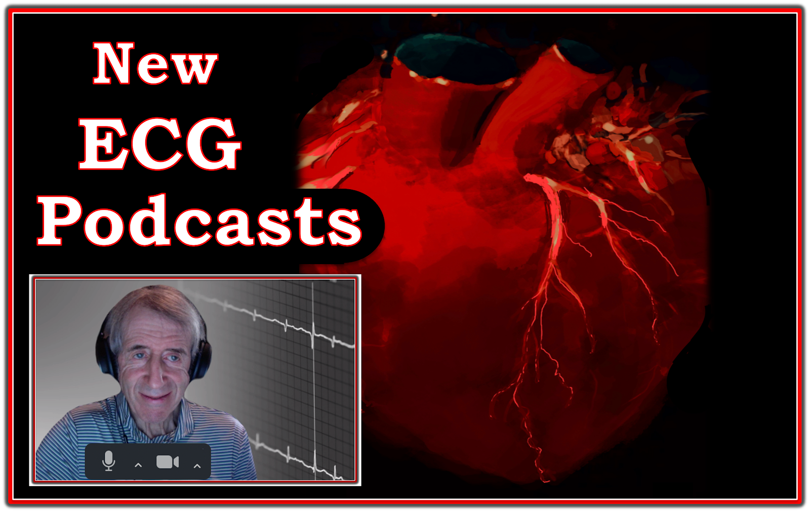

ECG Blog #431 — Các podcast mới của tôi về điện tâm đồ và nhịp tim!
=================================
- Gần đây tôi đã thu một loạt 4 podcast về các khái niệm MẤU CHỐT trong đọc điện tâm đồ.
- ĐƯỜNG LINK dễ nhớ — tinyurl.com/KG-ECG-Podcasts
- — https://tinyurl.com/KG-Blog-431 —
- Các ECG Audio PEARLS khác mà tôi đã làm trước đây cho ECG Blog của tôi nằm ở cột bên phải của mỗi trang trên blog này, ngay dưới biểu tượng này — trong mục "ECG Audio PEARLS".
=================================


=================================
Các Podcast điện tâm đồ mới của tôi (5/28/2024):
- Các podcast này thuộc loạt Mayo Clinic Cardiovascular CME Podcasts ("Making Waves") — do Dr. Anthony Kashou dẫn dắt. Chúng có trên trang Mayo Clinic Cardiovasciular CME.
- Bạn có thể chỉnh tốc độ phát bản ghi (Nếu thấy tốc độ "chậm" — tăng lên tốc độ 1.25 có lẽ là tối ưu cho bạn! ).
- Lưu ý Mục lục có mốc thời gian mà tôi trình bày chi tiết dưới đây giúp dễ tìm đúng nội dung cần nghe.
=============================
ECG Podcast #1 — Các lỗi thường gặp khi đọc điện tâm đồ (Và cách sửa những lỗi này một cách dễ dàng!) — do Mayo Clinic CV Podcast Series phát hành ngày 12/19/2023 (30 phút).
- 0:00 — Phần giới thiệu của Dr. Anthony Kashou: Chào mừng đến với chuyên mục điện tâm đồ của Mayo Clinic: “Making Waves” (Nội dung thảo luận hôm nay — Về diễn giả hôm nay = Ken Grauer, MD).
- 2:00 — Dr. Grauer: “Làm thế nào mà ông đọc điện tâm đồ giỏi đến vậy?”
- 3:30 — Tôi giới thiệu chủ đề hôm nay ( = “Các lỗi thường gặp khi đọc điện tâm đồ”) — và vì sao tôi chọn chủ đề này.
- 4:35 — Tôi được gửi một bản ghi. “Lỗi” thứ 1 là hoặc không có bệnh sử (hoặc có bệnh sử nhưng không cho tôi biết điều tôi cần biết).
- 6:40 — Sự cần thiết của một bệnh sử phù hợp (Ví dụ lâm sàng!).
=====================
Điểm MẤU CHỐT: Nhớ liệt kê tất cả các thuốc chống loạn nhịp (Lưu ý các thuốc làm chậm tần số — Các sản phẩm thảo dược! — và hỏi về thuốc nhỏ mắt chẹn beta! ).
=====================
- 13:10 — Lỗi tiếp theo = KHÔNG buộc bản thân phải cam kết với một chẩn đoán!
- 14:10 — Nhóm lỗi tiếp theo = Sự cần thiết của một Cách tiếp cận hệ thống (Điều này sẽ không làm bạn chậm lại! Trái lại — nó giúp bạn nhanh hơn, chính xác hơn và khiến bạn nghe có vẻ thông thái hơn!).
- 15:50 — Hệ thống của tôi để đọc nhịp ( = Trước hết, hãy nhìn bệnh nhân! — rồi “Watch your Ps, Qs & 3Rs” ).
- 18:15 — Lỗi kết luận vội vàng (Nghĩ rằng chỉ có 2 đáp án = “VT hoặc SVT” — vì bạn quên đáp án thứ 3 = một nhận định về xác suất tương đối!).
- 19:50 — Không nắm được xác suất thống kê! (tức là, Xác suất một WCT đều không có sóng P là VT là bao nhiêu?).
- 22:25 — Nếu bạn gặp một SVT đều ( = nhịp nhanh QRS hẹp) không thấy rõ sóng P thì sao? (4 nguyên nhân thường gặp? — Nguyên nhân hay bị bỏ sót nhất?)
25:10 — Hệ thống của tôi để đọc điện tâm đồ 12 chuyển đạo: (6 thông số MẤU CHỐT cần xem là gì?).
- 6 thông số MẤU CHỐT tôi ưa dùng trong Cách tiếp cận hệ thống ( = Tần số - Nhịp - Các khoảng [PR-QRS-QTc] - Trục - Lớn các buồng tim & Thay đổi QRST).
- Nhớ xem các khoảng ở giai đoạn sớm của quy trình!
- 27:50 — TÓM TẮT của Dr. Anthony Kashou.
==============================
LƯU Ý: Để biết thêm "quan điểm của tôi" về chẩn đoán cấp OMI trên điện tâm đồ — Xin xem ECG Podcast #2 (ĐƯỜNG LINK và mục lục chi tiết bên dưới!)
- Xin cũng xem thêm các ECG Videos #406, 407 và 408 mới của tôi về chủ đề này (BẤM VÀO ĐÂY).
- Để có đường link tới các ca điện tâm đồ có nhiễu và những "sự cố kỹ thuật" khác — Xin xem thêm ECG Blog #432 (sẽ đăng vào tuần 1 của tháng 6 ...) của tôi.
Và về rối loạn nhịp:
- Để biết thêm về WCT đều — Xem ECG Blog #361 —
- Để biết thêm về SVT đều — Xem ECG Blog #240 —
- Để biết thêm về cách nhận ra AFlutter — Xem ECG Blog #287 —
==============================
ECG Podcast #2 — Các lỗi điện tâm đồ dẫn đến bỏ sót tắc động mạch vành cấp (Ôn lại khái niệm OMI — và vì sao "mô hình STEMI" (STEMI Paradigm) đã lỗi thời và bỏ sót quá nhiều ca tắc động mạch vành cấp!) — do Mayo Clinic CV Podcast Series phát hành ngày 1/16/2024 (33 phút).
- 0:00 — Phần giới thiệu của Dr. Anthony Kashou: Chào mừng đến với chuyên mục điện tâm đồ của Mayo Clinic: “Making Waves” (Nội dung thảo luận hôm nay — Về diễn giả hôm nay = Ken Grauer, MD).
- 2:25 — Dr. Grauer: Lỗi thứ 1: Năm 2024 mà vẫn còn quá nhiều bác sĩ mắc kẹt trong mô hình STEMI lỗi thời dựa trên milimét”. (Điều chúng ta thật sự quan tâm ở bệnh nhân có CP [đau ngực] mới xuất hiện là gì? ).
- 6:15 — Lỗi #2: Lạm dụng thuật ngữ “NSTEMI” — xét về thực tiễn là một thuật ngữ vô dụng. Nhiều (nếu không muốn nói là phần lớn) NSTEMI thực ra là OMI ( = nhồi máu cơ tim (MI) do tắc động mạch vành cấp (Occlusion)).
- 7:42 — Lỗi #3: Tiêu chuẩn điện tâm đồ để chẩn đoán OMI?
- 9:25 — Có sóng T tối cấp không?
- 11:37 — Bạn có tìm được bản ghi trước đó của bệnh nhân không?
- 12:20 — Xem kỹ các chuyển đạo lân cận!
- 13:10 — Mối liên hệ đối nghịch như ảnh trong gương “kỳ diệu”! (Dùng nghiệm pháp soi gương (Mirror Test) của tôi để nhận ra ngay OMI thành sau — và OMI thành dưới bằng cách so sánh chuyển đạo III và aVL).
- 15:35 — Vì sao không cần chuyển đạo phía sau!
- 18:58 — Tìm thay đổi ST-T động! (Bao lâu thì ghi lại điện tâm đồ một lần?)
- 20:25 — Troponin độ nhạy cao lần 1 có thể bình thường.
- 21:00 — Cần biết gì về bản ghi trước đó?
- 21:50 — Lỗi lớn nhất — là không đối chiếu bệnh sử với từng điện tâm đồ được ghi! (Vì người thầy thuốc không nắm được khái niệm tái tưới máu tự phát!).
- 29:00 — Lỗi cuối cùng — hôm nay là không học hỏi từ các ca bệnh của chính mình!
- 31:28 — TÓM TẮT của Dr. Anthony Kashou.
ECG Podcast #3 — Đọc điện tâm đồ bằng máy tính và AI năm 2024 (Có chương trình đọc điện tâm đồ bằng máy tính nào thực sự đáng tin cậy để giúp bác sĩ đọc điện tâm đồ tốt hơn không?) — do Mayo Clinic CV Podcast Series phát hành ngày 3/19/2024 (28 phút).
- 0:00 — Phần giới thiệu của Dr. Anthony Kashou: Chào mừng đến với chuyên mục điện tâm đồ của Mayo Clinic: “Making Waves” (Nội dung thảo luận hôm nay — Về diễn giả hôm nay = Ken Grauer, MD).
- 2:00 — Dr. Kashou hỏi Dr. Grauer: "Năm 2024 — Ông nhìn nhận thế nào về đọc điện tâm đồ bằng máy tính và AI?"
==============================
Xin LƯU Ý: Tôi chia phần nhận xét về việc dùng kết quả đọc điện tâm đồ bằng máy tính thành 2 "thời kỳ: i) Thời kỳ ban đầu (tức là, từ giữa thập niên 1980 cho đến gần đây); — và, ii) Thời kỳ QOH mới (Queen Of Hearts) — trong đó ứng dụng QOH để đánh giá OMI cấp đang nhanh chóng trở nên phổ biến rộng rãi!
Tổng quan về podcast này:
- Từ 0:00 đến 5:54 = Phần mở đầu.
- Từ 5:54 đến 16:13 = Nhìn lại kinh nghiệm của tôi với việc đọc điện tâm đồ bằng máy tính từ giữa thập niên 1980 cho đến gần đây ( = thời kỳ ban đầu).
- Từ 16:13 đến 27:00 = Ứng dụng QOH mới có thể cải thiện đáng kể việc nhận ra nhanh OMI cấp như thế nào. (Người nghe chủ yếu quan tâm đến QOH — cứ việc nhảy tới 16:13 trong podcast 28 phút này).
- Từ 27:00 đến HẾT — TÓM TẮT của Dr. Anthony Kashou.
==============================
Phân chia nội dung chi tiết hơn:
- 2:20 — "Lời miễn trừ" của tôi: Những gì trình bày hôm nay phản ánh ý kiến của tôi, dựa trên kinh nghiệm của tôi. Tôi không có lợi ích tài chính nào với bất kỳ sản phẩm thương mại nào liên quan đến các nhận xét của tôi.
- Tôi bắt đầu bằng việc nêu một số ưu & nhược điểm của AI trong cuộc sống "bên ngoài" thế giới điện tâm đồ ...
- 5:54 — Vậy năm 2024, tôi nghĩ AI đang tác động thế nào đến việc đọc điện tâm đồ? Cần bao nhiêu "sự giám sát của con người"?
- 7:15 — Nhiều lỗi cơ bản vẫn tiếp tục mắc phải! Vậy thì — Chúng ta đang đi về đâu với việc dùng AI để đọc điện tâm đồ?
- 8:00 — Để trả lời, cần nhìn lại chúng ta đã đi lên từ đâu? Tôi kể lại kinh nghiệm của mình với việc đọc điện tâm đồ bằng máy tính, vốn bắt đầu từ hàng chục năm trước, vào thập niên 1980! Suốt những thập niên đó (và cho đến hiện nay) — vẫn còn xu hướng quá nhiều bác sĩ chấp nhận không chút nghi vấn những gì máy tính đưa ra. Điều này cần phải thay đổi.
- 10:20 — Máy tính có thể hỗ trợ bác sĩ đọc điện tâm đồ tốt nhất như thế nào? Cần nhận thức rằng bác sĩ với mức kinh nghiệm khác nhau và được đào tạo khác nhau thì có nhu cầu khác nhau (tức là, Nhu cầu của một bác sĩ tim mạch hay bác sĩ cấp cứu giàu kinh nghiệm khác với nhu cầu của những bác sĩ được đào tạo và có kinh nghiệm đọc điện tâm đồ ít hơn nhiều).
- 11:35 — Quan điểm của tôi về: Liệu máy tính có bao giờ đọc được các rối loạn nhịp phức tạp?
- 12:15 — Về kinh nghiệm của tôi từ thập niên 1980 đến khoảng ~2010: Tôi đã đi từ chỗ ghét kết quả đọc bằng máy tính đến chỗ yêu thích chúng như thế nào (sau khi cuối cùng tôi đã hiểu máy tính làm được gì và không làm được gì).
- 14:45 — Theo định nghĩa của tôi — BẠN có phải là người đọc điện tâm đồ “chuyên gia” không? Máy tính giúp chuyên gia tiết kiệm thời gian.
- Với “người không phải chuyên gia" ( = 90-95% bác sĩ, dù nhiều người trong số đó vẫn có thể đọc rất giỏi) — máy tính cung cấp ý kiến thứ 2.
- 16:13 — Đó là chuyện trước kia ... Còn bây giờ thì sao? (tức là, Năm 2024 AI có thể mang lại gì để cải thiện việc đọc điện tâm đồ của chúng ta?).
Tôi nhấn mạnh 4 khái niệm sau trong 11 phút cuối này (16:13-27:00):
- — i) Mọi chương trình điện tâm đồ mà tôi biết trước khi có QOH — đều đã lỗi thời, và ít hoặc không có ích trong cấp cứu!
- — ii) Kết quả đọc bằng máy tính không giúp ích cho việc đánh giá rối loạn nhịp (Các rối loạn nhịp đơn giản thì bác sĩ có năng lực tự thấy rõ — còn với các bản ghi phức tạp thì máy tính mắc quá nhiều lỗi);
- — iii) Ứng dụng QOH mới đã chính xác đến kinh ngạc trong việc nhận ra tắc động mạch vành cấp ở những ca không đáp ứng tiêu chuẩn STEMI lỗi thời (nhận ra nhanh OMI cấp giúp tái tưới máu sớm, cứu được cơ tim quý giá!). Các thế hệ QOH tương lai sẽ tiếp tục được cải tiến (Xem Dr. Stephen Smith's ECG Blog với rất nhiều ca lâm sàng minh họa các đặc điểm của ứng dụng QOH này trong chẩn đoán OMI); — và,
- — iv) Chẩn đoán lâm sàng tối ưu OMI cấp ở giai đoạn sớm đạt được tốt nhất nhờ kết hợp một người đọc điện tâm đồ có năng lực sẵn sàng đón nhận thông tin từ QOH.
- 27:00 — TÓM TẮT của Dr. Anthony Kashou.
==============================
LƯU Ý: Để biết thêm "quan điểm của tôi" về chẩn đoán cấp OMI trên điện tâm đồ — Xin xem ECG Podcast #2 (ĐƯỜNG LINK và mục lục chi tiết bên dưới!)
- Xin cũng xem thêm các ECG Videos #406, 407 và 408 mới của tôi về chủ đề này (BẤM VÀO ĐÂY).
- Để có đường link tới các ca điện tâm đồ có nhiễu và những "sự cố kỹ thuật" khác — Xin xem thêm ECG Blog #432 (sẽ đăng vào tuần 1 của tháng 6 ...) của tôi.
Và về rối loạn nhịp:
- Để biết thêm về WCT đều — Xem ECG Blog #361 —
- Để biết thêm về SVT đều — Xem ECG Blog #240 —
- Để biết thêm về cách nhận ra AFlutter — Xem ECG Blog #287 —
==============================
ECG Podcast #4 — Tất cả về so sánh điện tâm đồ 12 chuyển đạo và rối loạn nhịp (So sánh các điện tâm đồ tưởng chừng rất "dễ" — nhưng lại thường không được làm đúng!) — do Mayo Clinic CV Podcast Series phát hành ngày 5/21/2024 (35 phút).
- 0:00 — Phần giới thiệu của Dr. Anthony Kashou: Chào mừng đến với chuyên mục điện tâm đồ của Mayo Clinic: “Making Waves” (Nội dung thảo luận hôm nay — Về diễn giả hôm nay = Ken Grauer, MD).
- 1:50 — Dr. Kashou hỏi Dr. Grauer: “Chúng ta học được gì từ việc so sánh điện tâm đồ?” — và — “Làm sao so sánh các bản ghi tốt nhất mà vẫn tiết kiệm thời gian?”
- 2:15 — TÔI giới thiệu chủ đề hôm nay — và VÌ SAO tôi chọn nói về vấn đề lâm sàng quan trọng nhưng hay bị xem nhẹ này.
==============================
Xin LƯU Ý: Tôi chia phần nhận xét về việc dùng bản ghi để so sánh thành 2 "phần": i) So sánh một điện tâm đồ 12 chuyển đạo với một điện tâm đồ khác (tức là, bao gồm cả việc dùng các điện tâm đồ liên tiếp ở bệnh nhân đau ngực — và cách dùng TỐT NHẤT một bản ghi "nền" trước đó); — và — ii) Dùng bản ghi so sánh một cách tối ưu với các rối loạn nhịp tim!
- 2:50 — Hãy bắt đầu với việc so sánh điện tâm đồ 12 chuyển đạo. Vấn đề là gì? Làm sao tối ưu hóa kỹ thuật so sánh mà vẫn tiết kiệm thời gian?
- 3:20 — Trước hết hãy xác định, "Bạn đang so sánh cái gì?" (tức là, ĐIỀU GÌ đang diễn ra vào lúc ghi điện tâm đồ 12 chuyển đạo "trước đó"? — nghĩa là, Lúc đó bệnh nhân có triệu chứng không? — hay — Bản ghi "nền" của bạn được ghi vào lúc có một cơn nhồi máu trước đó?) = BẠN đang so sánh CÁI GÌ?
- 5:25 — Chuyển sang các điện tâm đồ liên tiếp. Bằng cách đối chiếu từng điện tâm đồ với việc có CP (đau ngực) hay không (và nếu có — nặng đến đâu?) — bạn thường có thể biết được NẾU mạch “thủ phạm” hiện đang thông hay đang tắc!
- Điểm MẤU CHỐT: Điều thiết yếu là đối chiếu từng điện tâm đồ với tình trạng CP vào lúc ghi từng bản ghi! (Hãy ghi điều này lên chính tờ điện tâm đồ và vào bệnh án – nếu không sẽ không ai nhớ).
- 8:35 — Minh họa cách đối chiếu các điện tâm đồ liên tiếp với sự hiện diện và mức độ triệu chứng có thể chẩn đoán OMI cấp (cần thông tim ngay) — ngay cả khi điện tâm đồ ban đầu “chỉ" không đặc hiệu.
- 9:50 — Bao lâu thì ghi lại điện tâm đồ ở bệnh nhân có CP? (Trả lời: Thường xuyên khi cần cho đến khi bạn chắc chắn là có OMI cấp hoặc không có OMI!).
- LƯU Ý: — Đừng cho morphin cho đến khi bạn biết mình sẽ làm gì với bệnh nhân! (tức là, cho đến khi bạn biết có cần kích hoạt phòng thông tim hay không!).
- 10:50 — Một OMI cấp đang tiến triển đôi khi có thể thay đổi trong vòng chưa đến 5-10 phút. Vì vậy — có thể cần ghi lại điện tâm đồ trong vòng vài phút! (nhất là NẾU có thay đổi về sự hiện diện hay mức độ CP).
- 11:45 — Tìm thay đổi ST-T “động” trên các bản ghi liên tiếp! Những thay đổi này có thể tinh tế — nhưng khi xuất hiện ở bệnh nhân đến viện vì CP, thường (hầu như luôn) là chỉ định thông tim ngay!
12:15 —
"Quan điểm" của tôi về kỹ thuật so sánh điện tâm đồ 12 chuyển đạo “tối ưu” — tiết kiệm thời gian và chính xác?
- Điểm MẤU CHỐT: Bạn phải đi từng chuyển đạo một từ bản ghi thứ 1 sang bản ghi thứ 2! (vì nếu không làm vậy — bạn sẽ bỏ sót những thay đổi tinh tế nhưng quan trọng!).
- LƯU Ý: So sánh cẩn thận từng chuyển đạo một thực ra tốn ít thời gian hơn so với cách so sánh tùy tiện 1 điện tâm đồ với điện tâm đồ khác mà phần lớn bác sĩ vẫn làm. (Thú nhận: Tôi cũng bỏ sót những thay đổi "động" tinh tế khi không so sánh tỉ mỉ từng chuyển đạo một).
- 14:05 — Với các điện tâm đồ 12 chuyển đạo liên tiếp — “Hãy chắc chắn bạn đang so táo với táo, chứ không phải táo với cam”. Nghĩa là — NẾU trục mặt phẳng trán và/hoặc vị trí đặt chuyển đạo trước tim không giống nhau ở 2 bản ghi đang so sánh — thì điều này cần được tính đến khi so sánh liên tiếp!
- 16:50 — NẾU thấy nhiễu quá nhiều và/hoặc các "sự cố kỹ thuật" khác ở bệnh nhân có CP mới mà bạn cần xác định NẾU đang có OMI cấp — Ghi lại điện tâm đồ ngay lập tức! (tức là, Đừng chờ đợi mới ghi lại điện tâm đồ ...).
- 18:15 — Các ví dụ về “sự cố” kỹ thuật (tức là, Chuyển đạo I bình thường không bao giờ âm toàn bộ).
- 18:40 — Về các “sự cố” kỹ thuật (tức là, “Những điều tôi ước mình đã biết từ năm ngoái") — Hãy lưu ý PTA (nhiễu do mạch đập) — một khi đã thấy nó — bạn có thể nhận ra ngay lập tức! (khiến những đồng nghiệp chưa biết PTA phải kinh ngạc!).
22:25 —
Dùng các bản ghi liên tiếp để đọc nhịp tối ưu!
- Điểm MẤU CHỐT: Hãy tìm thêm các chuyển đạo ghi đồng thời = “12 chuyển đạo thì tốt hơn một!” (tức là, Ví dụ với nhịp nhanh — QRS có thể trông hẹp nếu bạn chỉ có 1 hoặc 2 chuyển đạo — trong khi nếu một phần QRS nằm trên đường đẳng điện ở chuyển đạo duy nhất bạn đang xem, thì đó có thể là VT!).
- 24:10 — 5 chuyển đạo TỐT NHẤT (theo ý kiến của tôi) để tìm hoạt động nhĩ trong nhịp nhanh là chuyển đạo II (tức là, Sóng P phải dương ở chuyển đạo II nếu là nhịp xoang — trừ khi tim sang phải hoặc đặt sai vị trí điện cực) — rồi đến chuyển đạo V1; III,aVF; và chuyển đạo aVR (5 chuyển đạo này là những “chuyển đạo ưu tiên” (Go-To-Leads) của tôi để tìm sóng cuồng nhĩ kín đáo — cũng như để tìm hoạt động ngược dòng kín đáo và phân ly nhĩ thất kín đáo).
- 25:00 — Lợi thế của việc ghi điện tâm đồ 12 chuyển đạo khi gặp một nhịp nhanh chưa rõ = “12 chuyển đạo thì tốt hơn một” ( = Bạn có 12 chuyển đạo để biết QRS rộng hay hẹp!).
- 26:10 — Dù điều trị cấp cứu ban đầu cho một nhịp SVT đều sẽ tương tự (nếu không muốn nói là giống hệt) bất kể đó là loại SVT nào — xử trí lâu dài sẽ tốt hơn NẾU đến một lúc nào đó bạn có thể xác định chắc chắn đó là loại SVT nào! — Hãy ghi điện tâm đồ 12 chuyển đạo sau chuyển nhịp — và so sánh với điện tâm đồ 12 chuyển đạo ban đầu ghi trong cơn nhịp nhanh!
- Làm như vậy giúp phân biệt 4 nguyên nhân thường gặp nhất của SVT đều tần số ~150/phút mà không có sóng P xoang = i) Nhịp nhanh xoang; ii) Nhịp nhanh nhĩ; iii) SVT vào lại ( = AVNRT hay AVRT xuôi chiều); hoặc iv) AFlutter (cho đến nay là rối loạn nhịp hay bị bỏ sót nhất!).
- 29:20 — Và vài phút cuối của tôi về việc "điện tâm đồ để so sánh giúp bạn THẾ NÀO khi đọc một nhịp WCT đều (nhịp nhanh QRS rộng - Wide-Complex Tachycardia)?
==================
LƯU Ý: Do giới hạn thời gian của podcast, tôi không đi sâu vào chẩn đoán phân biệt của một nhịp WCT đều — mà trên thực tế gồm: i) VT, VT, VT cho đến khi chứng minh được điều ngược lại!; ii) SVT kèm hoặc dẫn truyền lệch hướng liên quan tần số hoặc BBB có sẵn từ trước (đây chính là lúc một bản ghi trước đó hữu ích đến vậy!); — hoặc — iii) Một nguyên nhân khác! (tức là, một loạn nhịp nhanh liên quan WPW — Tăng kali máu! — một ngộ độc nào đó …).
- Xem ECG Podcast #1 bên dưới để biết thêm về đọc điện tâm đồ 12 chuyển đạo và các rối loạn nhịp khó ...
==================
- 33:30 — TÓM TẮT của Dr. Anthony Kashou.